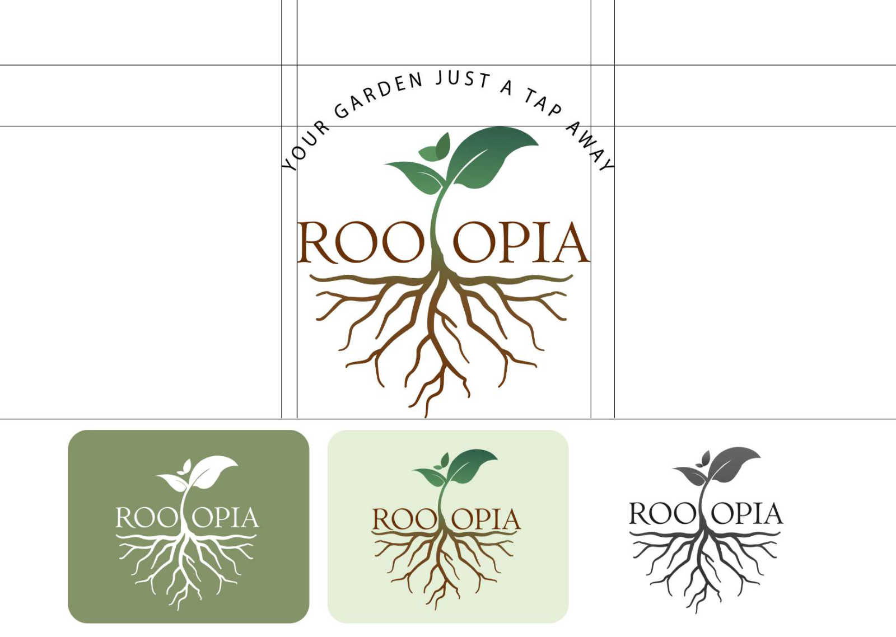
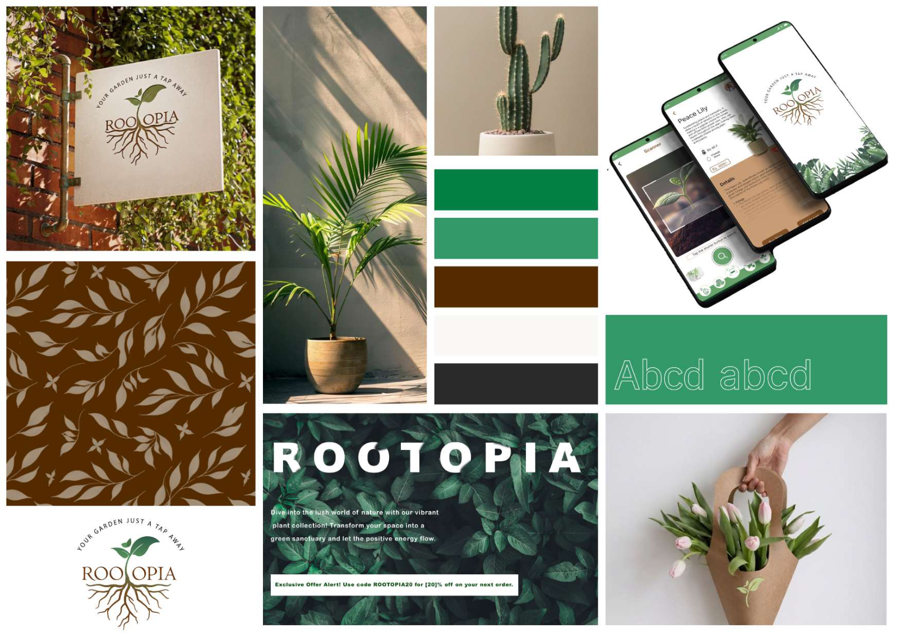
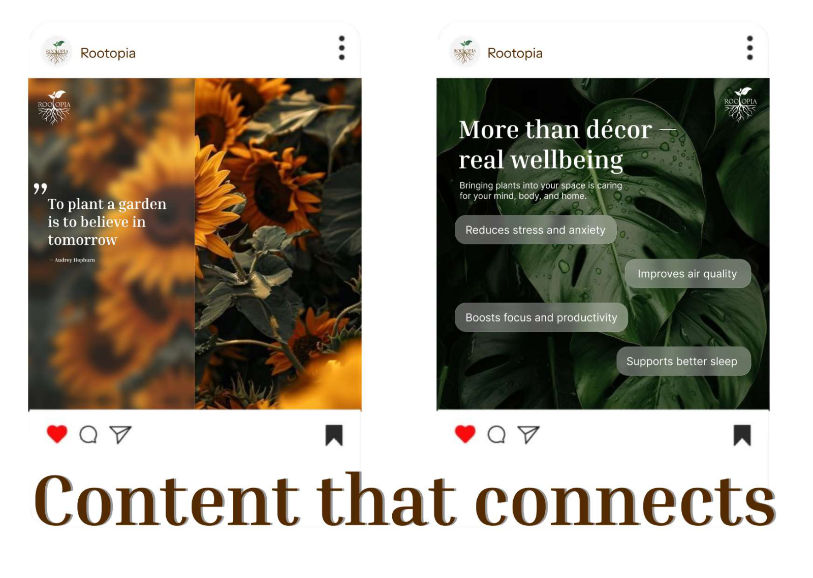
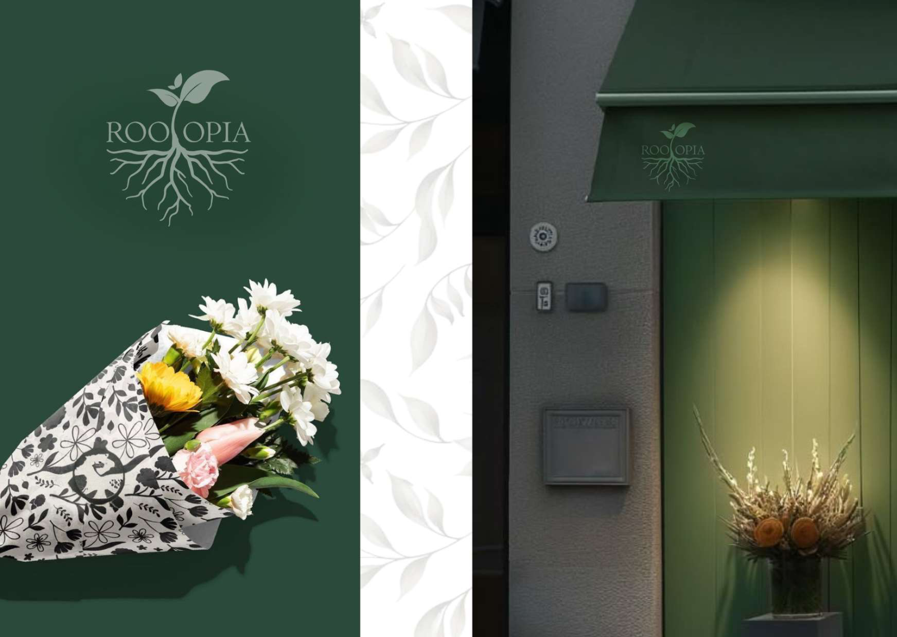
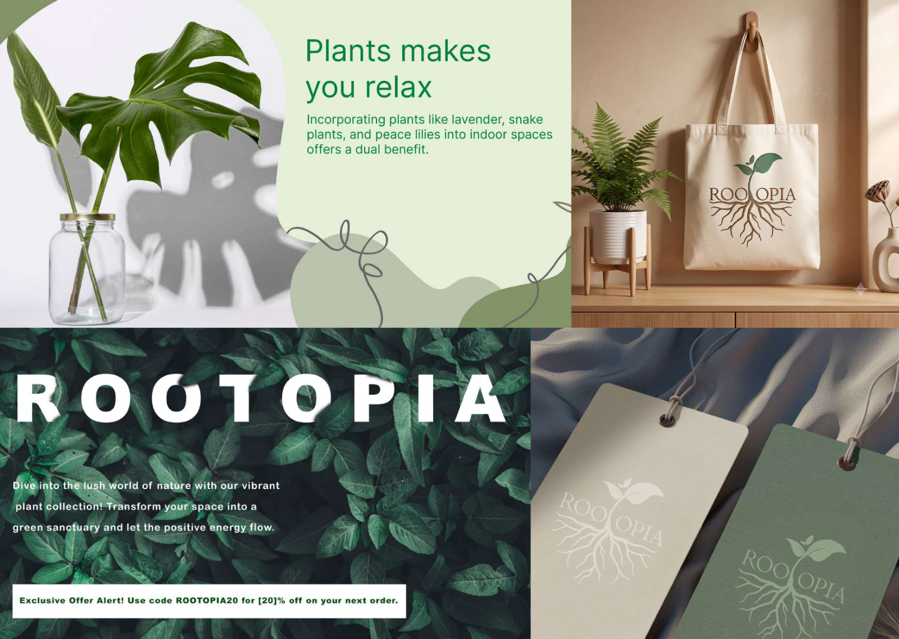

Rootopia · Brand identity
Plant care should feel effortless, not overwhelming
A warm, grounded identity for an all-in-one plant companion app: logo, palette, pattern, social and merchandise.

- Role
- Brand designer
- Deliverables
- Logo, palette, pattern, social, merch
- Related
- Rootopia app case study →
01 · The mark
A sprout that grows roots
The “T” becomes a seedling with roots spreading below the name: growth above, stability underneath. The tagline “Your garden just a tap away” arcs over it. The mark works in full colour, on sage, on mint and in single-colour charcoal.

02 · Colour & texture
Leaf and soil
Two greens for growth, a deep soil brown for warmth, on a soft off-white. Earthy colour, clean type and a leaf pattern keep the brand warm and dependable.
- {{ s.name }}{{ s.hex }}

03 · Applications
Social, storefront and merch



04 · Outcome
A brand that feels warm, grounded and dependable
One identity that carries from the app icon to a shopfront, a social feed and a kraft-paper wrap, so Rootopia feels like a trusted companion wherever people meet it.